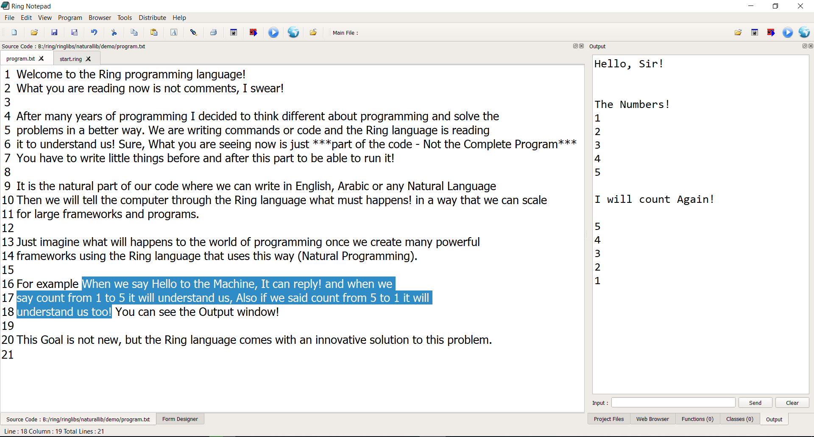

Applications developed in little hours¶
Ring is a new programming language that focuses on the Natural Language Programming and Declarative Programming paradigms and will let you think different about programming and how to solve your problems in a better way. It’s just released in 2016.01.25! In little days we got thousands of downloads and many developers started learning and using the language. Their feedback are the secret behind the language progress and success. They said that Ring is powerful, beautiful and easy to learn, Some of them provided good examples about what can be done using Ring in little hours. They are very happy with the language productivity.
Quotes about Ring¶
- “I like Smalltalk very much but now I like Ring better!”
- , Gal Zsolt (Hungary)
- “I find the language and its syntax very natural and easy to follow.”
- , Bhudda (United States)
- “Very nice approach for a new language.”
- , Matth Moestl (Austria)
- “Very interesting! I will keep an eye on it.!”
- , Eslipak (Argentina)
- “I’d like to see some benchmarks. Otherwise, at first glance, it looks really promising.”
- , Alex Deva (Sweden)
- “Excellent”
- , Liju Sankar (United States)
- “I wish you the best with this project.”
- , David O’Neil (United States)
- “Just fantastic.”
- , Jose Antonio (Mexico)
- “This looks like it was developed by some very competent people.”
- , Jim Clack (United States)
- “The Ring programming language seems pretty interesting so far.”
- , Eric Johnson (United States)
- “Thank you for this awesome language and wonderful ready to use Qt binding.”
- , Martial FAESSEL
- “I think it’s great what he does for the community of developers and novice programming.”
- , Marino Esteban
- “Ring is just awesome. The language is so cool and fluent. I am sure it’s going to be BIG.”
- , Ahmed Zain
- “What a proud, really wish you Eng. Mahmoud Samir and Your Team moving forward ^_^
- and from now , considered me a big fan of the Ring programming language.”
- , Zainab Mahmoud
- “Well guys I love this language and it appears that you have created perfect language.”
- , Moemen Ghulmi
- “Good work Mahmoud, I’ve installed ring pl, and it’s very perfect language.”
- , Ahmed Omar (Egypt)
- “Thanks for this great startup programming language. I wish you best of luck.”
- , Elkhouaja Khalid
- “Congratulations! I am very happy and I wish you Success and good luck.”
- , Abobasmla Hassan
- “Good Features of multi-use language on the Web, Mobile and Desktop.”
- , Abdelrhman Haider
- “Very interesting effort.”
- , Giannakakis Kostas (Greece)
“I am too lazy to open comment window and write message. But in your case I must say “Perfect” Really, create new remarkable language like your Ring is really perfect job. Even create editor for your language in your language with only few rows... Even noticed in rosettacode.org !
I read your previous articles and I tried these examples a few days ago and I will continue. I love Ring.
P.S.: Anders Hejlsberg, Niklaus Wirth, Bjarne Stroustrup, Ada Lovelace Hall of fame is waiting....”
, Martin Nedopil (Czech Republic )
“Ring seems very attractive to me through its very easy design and the Qt bindings. I like its declarative approach and the generous documentation.”
, Shalok Shalom (Austria)
- “Ring (and plenty of extension library + Qt) is wonderful.”
- , Kovacs Attila (Hungary)
“Since two days I’m trying Ring and I’m really impressed, in add to power commands and easy use, it’s really very efficient and very fast.
Each day I hope to find the couple of the year PWCT+RING ... Maybe for my Christmas gift!!!! HO HO HO HO
- Continue your fantastic job and congratulations.”
- , Jose Le Roux (France)
- “There are 3 different styles, it looks like Python and C”
- , 64remy
“I was taking a tour around Rosettacode and have found Ring. I like the syntax a lot. It’s clean and easy to understand. It looks like a very clean BASIC dialect without sigils. I can say that this is the easiest and the most BASIC-like language I’ve ever tried.”
, Tomaaz
- “Thanks for your effort. I took a quick look and found it interesting.
- You are trying to follow more or less like Clipper with simple command and no rigid declaration rules. Good.”
- , Anand Gupta
- “Thanks for this wonderful language”
- , Vinod kc (India)
- “Very enlightening. good job!”
- , Southmountain (United States)
- “The thing I liked was the loop exiting”
- , Leon de boer (Australia)
- “An outstanding and easy language to program with.”
- , Kenneth Burgo (Philippines)
- “I chose your language as I feel I can understand it better than other languages”
- , Harry Singh
- “I like the totality of the language, far more features than expected and the freedom of expressiveness is unique.”
- , Evikone
- “Thank you very much Mahmoud! I am using ring for many experiments and so far I love it.
- I really want to continue using ring and contribute what I can.”
- , John (SienSystem)
- “Sir, Very Good”
- , Kamlesh Patel
- “That’s more than a “cool” syntax, the example of writing free-form text between
curly-brackets such that each word calls a function. Which could be interesting (A syntax like that would be nice for declaring text styles)”
, LaurieCheers- “If you browse around you see they have listed 160 contributors.
This year they have entered Top 100 in the TIOBE index. Lot of effort seem to have been made to make this language pop out and catch the attention of masses.”
, Htuhola- “I like the idea of The Ring being in ANSI C
- it’s an impressive creation, and a lot of skill went into it”
- , Garry Taylor
- “Very innovative language! Syntactically clean”
- , CodeProject Member
“The author must be commended for the readily-obvious hard work and effort that has gone into creating a rich ecosystem for his language. It seems that the language is quite extensive as well. I would find it useful to see a BNF grammar and concise coverage of its semantics.”
, Xx-Leninist-1917-Xx (Reddit)
- “I can see the AI of the future using this technology to solve computational problems for..... the humans.”
- , Cryptonite (United States)
“I like your programming language, I like you are going to develop mobile app using RingQt and also I appreciate your web library.”
, Domenico D’Oria (Italy)
- “Congratulations for the great work with this new programming language.”
- , Kenny Silva (Venezuela)
- “Ring is an amazingly full-featured language and so well documented (the bane of most newer languages out there!)”
- , Alex McCullie
- ” I found the language yesterday, and liked the Qt bindings, as they give a declarative way to create a QtWidgets GUI.”
- , Cochise Cesar
- “Ring does look intriguing, and I’ll be reading more of the documentation soon”
- , Jamie Cooper
“I was recently considering designing my own dynamically-typed, prototypical language and then developing a means to compile it into C/C++. However, last night I was surfing the web and noticed a little-known language called “Ring” which you’ve recently created. I began reading the Motivation section in Wikibooks to see why the language was designed and implemented, and I was shocked to see that someone else had created a language with the same intention and need as myself. I mean, it’s mind-blowing that someone would have addressed every issue I have with the currently accepted languages. Why bother with C/C++ when the syntax can be cryptic and they are largely antiquated - why should we still be dealing with header files, etc? Moreover, your comments on Java and C# being too verbose and forcing OOP onto the user is spot on as well - yet these languages are still primarily used by millions of programmers for the most mundane tasks. At this point, I’m led to believe that it’s simply a matter of legacy applications that still haven’t made the transition, as well as the ever-popular “Appeal to Popularity” fallacy shared by many in academia and enterprise. Then we come to languages, that are easier and much more modern, and yet even now, are being to show their age. Languages like Python which stresses whitespace and indentation, as well as (just like the formerly mentioned languages) irrelevant tokens for the conditional statements. Granted, it’s not as bad as tracking down various curly braces or semi-colons, but one misstep in indentation might as well be as frustrating to track down. The same could be true of Ruby, except with Ruby, we have even odder conventions embedded into the design of the language, which I don’t feel the need to address and moreover, we’re left with something like Lua which is missing a great many features that the previously mentioned languages include. There are many more languages and faults with them, we could claim that PHP is nothing more than a glue for web pages and backends but with so many frameworks available now, it’s falling by the wayside fast. Javascript is constantly being cloned. So, each of these general purpose languages, which we all know are mostly domain-specific and in some cases, also oriented at certain OS(C# was before 2016 and Obj-C/Swift will likely always be primarily for MacOS apps). So, then we’re left with several additional options, involving everything from hybrids to other imperative-based languages like D, GoLang, Scala, Julia, etc. But finally, there’s a new language called Ring - and yes, it may just end up ruling them all. It’s the unicorn we’ve finally been waiting to arrive, that can handle multiple domains, tasks, and paradigms. I honestly can’t wait to jump in and when I do I probably won’t come back up anytime soon. My only apprehension is that the language may not include a library or primitive functions for math as Python and Julia do. Aside from that, if so, hopefully, I won’t be having to use linear expressions as arrays (considering how intellectually lazy it is to do) and that there will be more support/tools as the community continues to grow. It’s crazy to think it’s only been around for a year and yet, it’s already, practically a batteries-included language.”
, Gedalya (YouTube)
“Thank you Mr. Mahmoud for all the wonderful work, whenever I dive in the Source code I see the great effort, further development more excellence, God will reward you with what you wish”
, Azzedine Ramal
“What a great joy to find this surprisingly genius language !!!. It was a total joy to go through the documentation and look at the samples in Rosetta code. Marvelous work. I would even leave my fortune to the development of this language. Keep the good work going and wishing this language will go viral.
ps: Thanks for keeping array index to start with 1. It means a lot.”
, Nehemiah Jacob (Sydney, Australia)
“I find it very interesting. Especially the fact that it is cross platform makes it something to keep an eye on.”
, Boudewijn Lutgerink
- “The language I like the most. Efficient, simple, easy, flexible and wonderful language.”
- , Roshan Ali
- “I like variety. The richer the toolbox, the more appropriate the tool.”
- , Jonathan Day (Quora)
- “I greatly appreciated your work and congratulations on what has been achieved.”
- , Umberto Meglio (Italy)
- “Thanks a lot I just found Ring two days ago and I decided to learn it, it is amazing, the samples are helping a lot.”
- , Zaraki Ken
- “Extraordinary. well done sir”
- , RugbyLeague (CodeProject Member - United Kingdom)
- “The Ring language is pleasant. You get ahead very quickly.”
- , Neskuk (CodeProject Member - Switzerland)
- “I’m happy to use your language.”
- , Akhil Reddy
- “I am enjoying using the Ring Programming language.”
- , Gabriel Wendt
- “I’m loving this language!”
- , Pablo Prieto
“Ring Notepad is a an example of the power of Ring. It is like NotePad++ with built in form design capability, drag and drop, object attributes etc. It is a marvelous application”
, Bert Mariani (Italy)
“Ring is the language that offers the greatest potential for converting programmers frustrated with the amount of time it takes to develop apps in C/C++, C# and other OOP-based languages. Considering the extent to which Ring has evolved since the first release in 2016, the Ring team has proven itself worthy of a very high achievement award in the world of programming languages. The extent to which Ring has simplified the development database apps, web apps and GUI apps is a great credit to the Ring team. Ring’s implementation of OOP and GUI based apps is far superior to C++ and C#. Another major achievement of the Ring team is the ease at which programmers can get on-line access to Ring documentation, compared to on-line C++ and C# documentation. The Ring Game Engine is truly elegant and it’s designer (s) deserve lots of credit for such an impressive bit of software.”
, L Godioleskky
- “Strongly speaking, it is a strong and new game programming language.”
- , IsVowel (Japan)
- “The language seems to have some interesting features, specially the use of braces to access object fields and methods.”
- , Nuaua (Reddit)
- “The code that implements the Ring VM actually looks quite nice. There is a bunch of test code – great!”
- , Peterfirefly (Reddit)
- “Ring seems promising. It first appeared in 2016 although it’s concept is older. It is meant to be portable and can be embedded in C/C++ projects”
- , Wim ten Brink (Quora - Top Writer (2018))
- “Interesting alternative to Lua.”
- , djxtc (Sourceforge)
“Ring is a serious thing in the programming language landscape. One shoud understand its foundation before she can shape an opinion worth considering. There are several innovations outthere with a clear commitment from its designer to simplicity, flexibility and learnability. Natural language as its imagined by Ring opens a window for an unlimited set of applications otherwise impossible to think about. One can built an interactive chatbot based on a rich domain specific language in a matter of hours not months. Combined with a smart yet effective implementation of a declarative programming paradigm, Ring empowers the creation of any kind of programming language on top of it, with any set of syntax. Even the language keywords can be overwritten to serve one’s own keywords in any human language not only english. Ring is a distruption, a big intellectual step forward but also a beautiful reincarnation of several legacy ideas and best practices from other old languages like Basic, Lisp and others. Those ideas are a humanity heritage that new visionaries like Mahmoud S. Fayed, the Ring designer, but also Rick Hickey, the Clojure designer, are trying to callback in todays world of complex programmability. An other dimension of Ring, which formed one of its basic motivations, relates to visual programming. Software is a fluid and evolutionary creature and textual code is not accessible to the most of common humans. The promise of visual programming is to empower people, enhance understandability and invite business users to the arena of software development more intutively. Ring was made by design with an objective of having a programming language capable of better supporting the visual paradigm. Gamification is a first-class citizen in the language. This is a tremendous advantage compared to other general-purpose programming languages. Ring supports a large number of gaming libraries and open a large window of capabilities to use, not only in gaming but also in business and education applications. The best way to assesing the power of Ring is to looking into it and reflecting about the number of problems it is capable to solve.”
, Mansour Ayouni (Tunisia)
“I have only known ring-lang for few weeks, really love features and visions of ring: bracket access, class region, declarative and natural programming. It’s simple and beautiful the way ring deal with these paradigms. I think it’s really great work what you’re done, and doing. I want to develop ethereum client in ring language, not only but it’s style. It’ll have natural and declarative code on it’s main part. Furthermore, It will be fantastic if there is “natural language -> evm bytecode” compiler, maybe ring have the solution”
, Asta
FetchStockData Application¶
URL : https://groups.google.com/forum/#!topic/ring-lang/-fa1U_SXSjo
Author : Bert Mariani
This App is written in Ring.
It will fetch stock data from Yahoo and draw various types of charts. Any valid stock ticker can be entered, or selected from the drop down list - Select Symbol.
It will not guarantee that you make money in the stock market. But it will visualize the history of the stock.


Google API Shortener Application¶
Author : John Storm (SienSystem)
Hi everyone,
Wanted to (finally) share a first release version of a small but very nice tool to shorten urls using the Google shortener API. The code is fully documented, maybe too documented, but, provides a good reference as to what is going on.
You can obtain your own API key, or you can use my key to test and use the tool.
Hope you enjoy the application. Please feel free to test at your convenience.
Ring is FUN!!


Analog Clock¶
URL : https://github.com/ring-lang/ring/blob/master/applications/analogclock/AnalogClock-Image.ring
Author : Bert Mariani

TicTacToe Game¶
URL : https://github.com/AbdelrahmanGIT/RingSamples/blob/master/src/TecTacToe.ring
Author : Abdelrahman Mohammed

Squares Puzzle Game¶
URL : https://github.com/MajdiSobain/RingAllegro_SquaresPuzzle
Author : Majdi Sobain
This project is about (Squares Puzzle) popular game that I have programmed using ring language with its RingAllegro Library. The principle of this game is very known to all of us, which is moving squares to get the real full shape of the original picture.
This game could be played using mouse and keyboard as well, showing a message of congratulations at the successful solving.


Calculator Application¶
Author : Magdy Ragab
Updated Version by Gal Zsolt and Bert Mariani
Screen Shot:

Windows StartUp Manager Application¶
URL : https://github.com/ring-lang/WinStartupManager
Author : Majdi Sobain
Windows Startup Manager is an application that has the ability to let the user control what programs should start at Windows booting time. It gives you the ability to show, edit, delete, or even add new programs entries to be lunched at Windows booting time.
It is specialized at managing Windows startup entries that are stored in Windows Registry only, but provides a quick option to edit programs shortcuts type entries.
Screen Shot:

Werdy Application¶
URL : https://github.com/ring-lang/werdy
Author : Magdy Ragab
Quran application includes reading suras, searching and bookmarking.
The applcation is provided for Windows, Linux and Android.

Samples in this book¶
The next samples are developed in little hours and we will introduce them through this book.
The next screen shot for he Ring Notepad application
The next screen shot for the Cards Game

The next screen shot for the Cards Game (Android)

The next screen shot from the Web Development chapter

The next screen shots for simple 2D Games that we will present in the Game Engine Chapter.
Stars Fighter Game

Flappy Bird 3000 Game

Super Man 2016 Game

The next screen shot for the TicTacToe 3D Game
Screen Shot:

The next screen shot for the Gold Magic 800 Game

Innovative¶
The language comes with better support for Natural Language Programming and Declarative Programming. The innovation comes in supporting these paradigms with new practical techniques on the top of Object-Oriented Programming and Functional Programming. No need to know anything about (Compilers and Parsing). You get the language constructs ready for use to create domain-specific languages in a fraction of time.
Articles:-
- Natural Language Programming Library :
https://www.codeproject.com/Articles/1200766/Using-the-Natural-Language-Programming-Library-NLP
- Natural Language Programming :
https://www.codeproject.com/Articles/1138605/Natural-Language-Programming-in-the-Ring-Programmi
- The Declarative Approach :
https://www.codeproject.com/Articles/1222105/The-declarative-approach-of-the-Ring-programming-l
- Syntax Flexibility :
https://www.codeproject.com/Articles/1137388/Syntax-Flexibility-in-the-Ring-Programming-Languag
- The Ring Programming Language :
https://www.codeproject.com/Articles/1089887/The-Ring-Programming-Language
Practical¶
Many of the Ring libraries (StdLib, WebLib, Natural Library, Games Engine, etc.) and the Ring IDE (Ring Notepad, Form Designer, etc.) are written in the Ring language itself. Ring is ready for use in production and increase the developers productivity.
Check the Form Designer source code : https://github.com/ring-lang/ring/tree/master/applications/formdesigner
We can run the Form Designer as Android application!